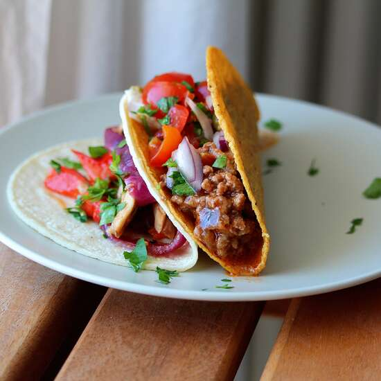

Taco Meat

Description
This recipe makes just the taco meat. You have to buy everything else, of course. Make a big batch and use for a multiple of different meals: add to bean burritos for a more hearty and tasty burrito, or add a can of beans (kidney, red, or pinto) and use for Frito® Pie, Navajo tacos, or taco salad.
Ingredients
- 1 pound lean ground beef
- 1/2 teaspoon onion powder
- 1/2 teaspoon garlic salt
- 1/2 teaspoon celery salt
- 1/2 teaspoon ground cumin
- 1 can tamato sauce
Directions
- Heat a large skillet over medium-high heat. Cook and stir beef in the hot skillet until browned and crumbly, 5 - 7 minutes.
- Season beef with onion powder, garlic salt, celery salt and cumin. Pour tomato sauc over the beef, stir to coat, and simmer until thickened, slightly, about 5 minutes.